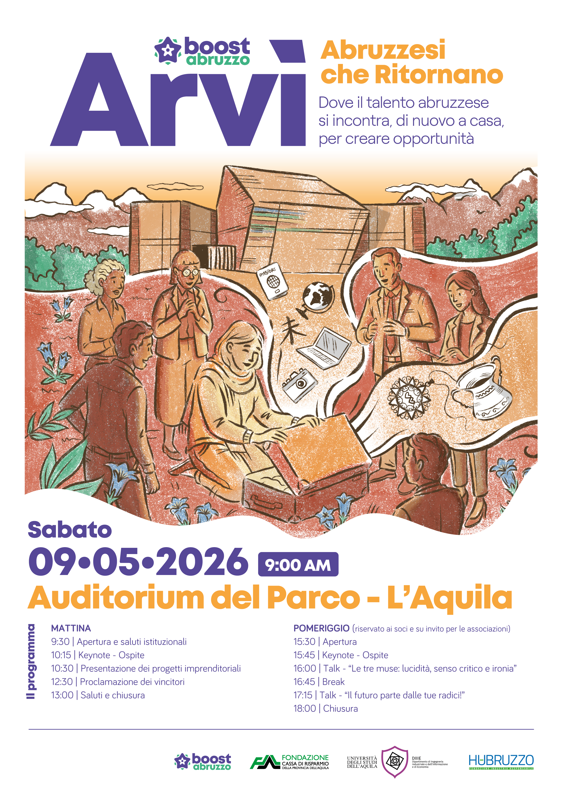

Dove il talento abruzzese si incontra, di nuovo a casa, per creare opportunità
Arvì è un inno alla nostalgia delle nostre radici, ma non a quella nostalgia che guarda solo al passato: è un sentimento positivo, che si trasforma in energia e responsabilità. È il desiderio di tornare — fisicamente o simbolicamente — per mettere a disposizione del territorio ciò che abbiamo imparato altrove.
Arvì - Abruzzesi che ritornano nasce proprio da questo spirito: creare uno spazio in cui esperienze diverse possano incontrarsi e contaminarsi, in cui chi è rimasto e chi è partito possa dialogare alla pari, riconoscendosi parte della stessa comunità.
Arvì si terrà il 9 maggio 2026 presso l'Auditorium del Parco a L'Aquila e si articolerà in due momenti distinti.
La mattina, aperta al pubblico, sarà dedicata alla Finale del BoostCamp: gli studenti che hanno partecipato al percorso presenteranno i pitch dei propri progetti innovativi davanti a una platea di professionisti e ospiti speciali, che avranno il compito di valutarli e selezionare le proposte vincitrici. Un momento di confronto diretto tra giovani talenti e professionisti, pensato anche come occasione di orientamento per studenti e studentesse che desiderano affacciarsi al mondo dell'imprenditorialità e dell'innovazione.
Il pomeriggio sarà invece dedicato a momenti di networking e talk riservati ai soci BoostAbruzzo e alle realtà associative e imprenditoriali del territorio su invito: non una conferenza tradizionale, ma un contesto aperto e informale, pensato per favorire connessioni autentiche e la condivisione di esperienze maturate fuori dal contesto regionale.
Un'occasione per generare quel valore che può nascere solo dalla contaminazione di esperienze, competenze e visioni diverse. Perché il ritorno, quando è condiviso, diventa progetto.
9:30 | Apertura e saluti istituzionali
10:15 | Keynote - Ospite
10:30 | Presentazione dei progetti del programma BoostCamp con Univaq
12:30 | Proclamazione dei vincitori
13:00 | Saluti e chiusura
15:30 | Apertura
15:45 | Keynote - Ospite
16:00 | Talk - "Le tre muse: lucidità, senso critico e ironia"
16:45 | Break
17:15 | Talk - "Il futuro parte dalle tue radici!"
18:00 | Chiusura
Compila questo modulo, ti ricontatteremo.
Modulo di partecipazione - Mattina
Contattaci a questo indirizzo email: arvi@boostabruzzo.com
Raccontaci chi sei e perché vorresti partecipare. Ti daremo riscontro al più presto.
Quando?
Sabato 9 maggio 2026
Dove?
L'Aquila, Auditorium del Parco
Perché?
Per incontrarci e condividere esperienze, visioni e progetti. Un'occasione di Networking e reale connessione.
Arvì - Abruzzesi che ritornano è sponsorizzato da Fondazione Carispaq, Fondazione Hubruzzo, Fondazione SNAM, Fondazione Ernst and Young, il Comune dell'Aquila e il Dipartimento di Ingegneria Industriale e dell'Informazione e di Economia (DIIE) dell'Università degli Studi dell'Aquila.